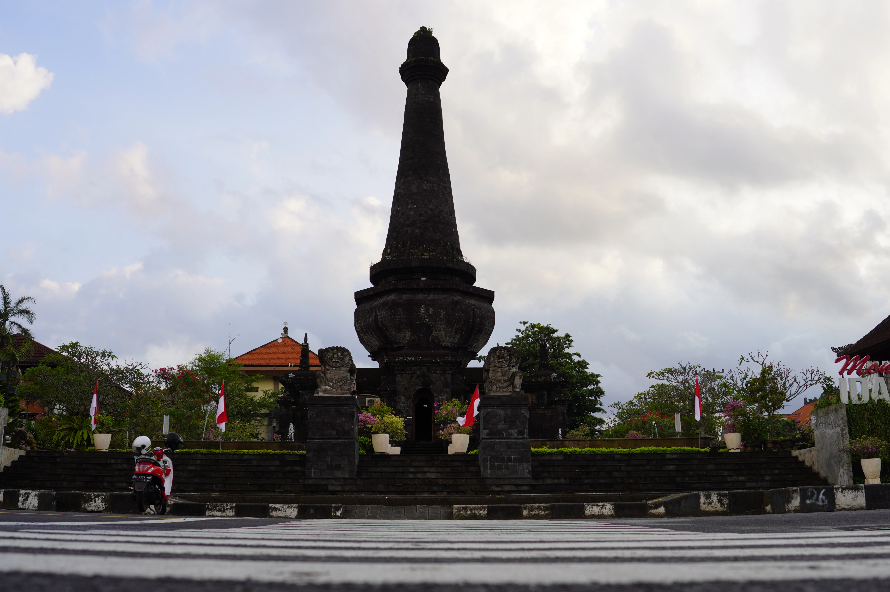

Jejak Sejarah Klungkung
Dari kejayaan Gelgel hingga Puputan 1908, empat babak yang membentuk Kota Semarapura.
Gulir Untuk MenelusuriKejayaan Gelgel
Di bawah Dalem Waturenggong, Kerajaan Gelgel mencapai puncak kejayaannya sebagai pusat kekuasaan dan kebudayaan Bali. Tradisi lukisan wayang Kamasan berkembang di sekitar istana pada masa ini.
Berdirinya Kerajaan Klungkung
Dewa Agung Jambe memindahkan pusat pemerintahan dari Gelgel ke Semarapura. Dari sinilah para Dewa Agung memerintah dan dihormati sebagai raja yang dituakan di antara raja-raja Bali.


Puputan Klungkung
Menghadapi pasukan Belanda, Dewa Agung Jambe II bersama keluarga dan pengikutnya memilih berperang hingga titik darah penghabisan. Peristiwa ini mengakhiri masa Kerajaan Klungkung.
Semarapura Hari Ini
Semarapura kini menjadi ibu kota Kabupaten Klungkung, Kertha Gosa dan Museum Semarajaya menjaga ingatan sejarah serta seni lukis Kamasan agar tetap hidup.

Kejayaan Gelgel
Di bawah Dalem Waturenggong, Kerajaan Gelgel mencapai puncak kejayaannya sebagai pusat kekuasaan dan kebudayaan Bali.
Berdirinya Kerajaan Klungkung
Dewa Agung Jambe memindahkan pusat pemerintahan dari Gelgel ke Semarapura.
Puputan Klungkung
Menghadapi pasukan Belanda, Dewa Agung Jambe II bersama keluarga memilih berperang hingga titik darah penghabisan.
Semarapura Hari Ini
Semarapura kini menjadi ibu kota Kabupaten Klungkung, Kertha Gosa dan Museum Semarajaya menjaga ingatan sejarah.